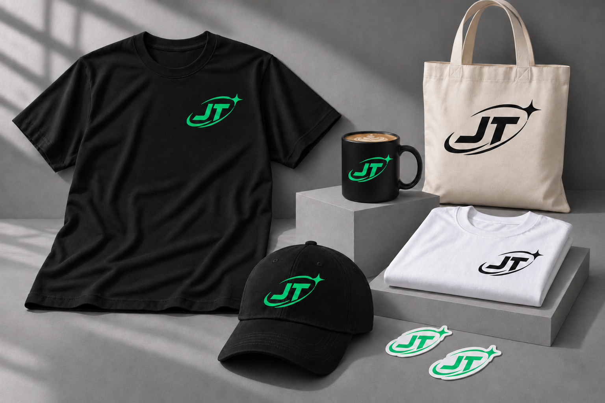

JT / Solid identity
Your logo. In its clearest form.
The orbit-and-sparkle JT with the custom JuverTech wordmark, in solid green, black and white.
Website / 1340 × 240 vector canvas


Made for every frame.
One identity, composed for a wide canvas, a tall format and a square. Each layout has matching transparent exports.


A clear signature online.
Full-name desktop headers and a compact mobile signature. The company website uses this identity. Light and dark examples show how to apply the same artwork.
Systems that work
for your business.
Custom apps, websites and connected workflows for businesses ready for their next step.
Discuss your projectDark website / header
Compact / mobile header


Wear it. Carry it. Make it yours.
A single-color mark for cotton, canvas, ceramic, embroidery and stickers.

One mark. One ink.
The solid artwork carries the identity without a gradient. Use the symbol for smaller placements and the full lockup for larger prints.
The generated mockup shows placement and materials. Use the SVG masters for production and ask your supplier for an ink or stitch proof.


Keep the whole system.
Transparent SVG and high-resolution PNG logos in all six layouts. Five social samples, merch photography, a brand overview and a practical usage guide.
Download complete brand kit
Solid-color masters. Custom outlined wordmark. Match green to a physical swatch when printing.
Ready to show up.
Social artwork for the business: a profile image, landscape cover, square post, portrait post and vertical story.